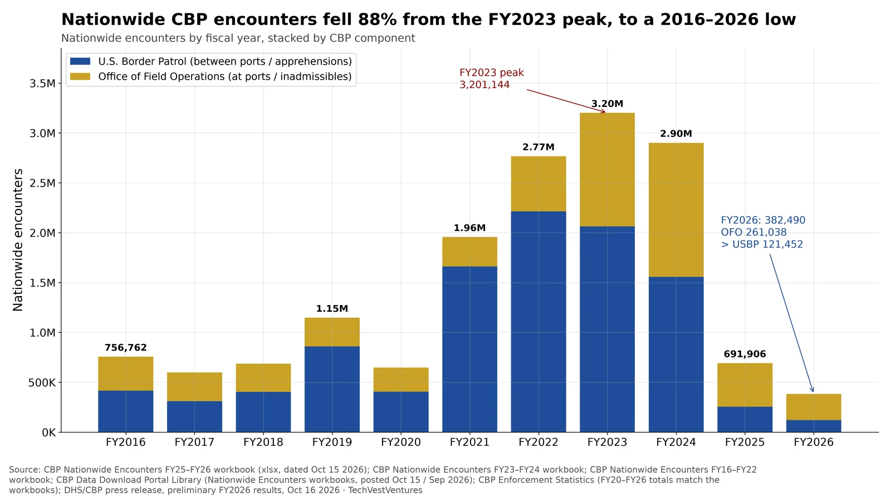
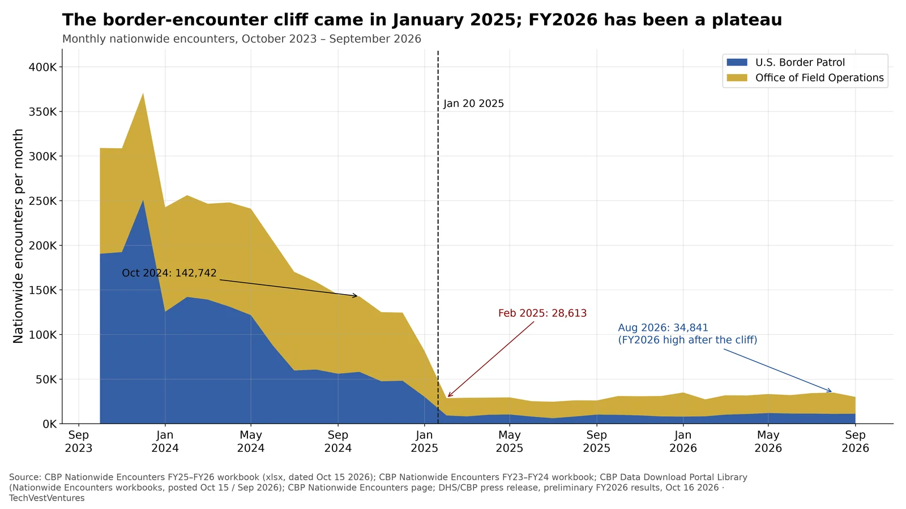

Q11. Border Encounters

Nationwide CBP encounters (U.S. Border Patrol apprehensions plus Office of Field Operations inadmissibles, and Title 42 expulsions while that authority existed) by fiscal year, summed from CBP's Nationwide Encounters workbooks covering FY2016–FY2026. Encounters peaked at 3,201,144 in FY2023 and fell to 691,906 in FY2025 and 382,490 in FY2026 — 88% below the FY2023 peak and the lowest total in this 11-year file. In FY2026, port-of-entry encounters (OFO, 261,038) exceeded between-port Border Patrol apprehensions (121,452) for the second straight year.
- Southwest land border encounters (USBP plus OFO at the southwest land border) were 139,983 in FY2026, against 2,475,669 in FY2023.
- In FY2026, Central/Coastal/Other encounters (187,231, mostly air and non-land ports) exceeded the southwest land border (139,983).
- DHS's Oct 16 2026 press release cited a preliminary nationwide total of 379,243; the Oct 15 Nationwide Encounters workbook sums to 382,490. The chart uses the workbook. CBP's Enforcement Statistics page matches the workbook exactly for FY2020–FY2026.
- ICE's Detention Management page, checked Nov 8 2026, still offers only the FY2026 spreadsheet posted Jul 20 2026 (snapshot Jul 11). No newer official detention file was available for this update.
Note: An encounter is an event, not a unique person: the same person encountered more than once counts more than once. OFO inadmissibles include people who present at a port of entry and are found inadmissible, seek protection, or withdraw an application. Title 42 expulsions ran from March 2020 through May 2023 and are included in those years. The FY2016–FY2019 workbook totals differ slightly from the summary table on CBP's Enforcement Statistics page (which begins at FY2017); FY2020 onward matches both sources.
Sources: CBP Nationwide Encounters FY25–FY26 workbook (xlsx, dated Oct 15 2026) CBP Nationwide Encounters FY23–FY24 workbook CBP Nationwide Encounters FY16–FY22 workbook CBP Data Download Portal Library (Nationwide Encounters workbooks, posted Oct 15 / Sep 2026) CBP Enforcement Statistics (FY20–FY26 totals match the workbooks) DHS/CBP press release, preliminary FY2026 results, Oct 16 2026

Monthly nationwide CBP encounters from October 2023 through September 2026 (the end of FY2026), stacked by component, from the same Nationwide Encounters workbooks as D6. Encounters were still above 140,000 a month in October 2024 (142,742), then fell through the presidential transition to 81,479 in January 2025 and 28,613 in February 2025. They did not keep falling: the FY2026 monthly range was 27,232 (February) to 34,972 (January), with August 2026 at 34,841 and September 2026 at 29,955. After the cliff, OFO port encounters exceeded Border Patrol apprehensions in every month.
- Four-month drop from October 2024 (142,742) to February 2025 (28,613): down 114,129, or 80%.
- The lowest month in this window was July 2025 (24,589). August 2026 (34,841) was about 1.42 times that low.
- In September 2026, OFO recorded 18,727 encounters and Border Patrol 11,228.
- Public posts about the year (for example amplifying the Oct 16 DHS release) usually cite the preliminary nationwide figure of 379,243, not the 382,490 workbook total charted here.
Note: Month labels are calendar months (FY2026 runs October 2025–September 2026). CBP revises earlier months when it republishes the file; these figures are from the October 15 2026 FY25–FY26 workbook and the September 2026 FY23–FY24 workbook. Encounters are events, not unique people.
Sources: CBP Nationwide Encounters FY25–FY26 workbook (xlsx, dated Oct 15 2026) CBP Nationwide Encounters FY23–FY24 workbook CBP Data Download Portal Library (Nationwide Encounters workbooks, posted Oct 15 / Sep 2026) CBP Nationwide Encounters page DHS/CBP press release, preliminary FY2026 results, Oct 16 2026